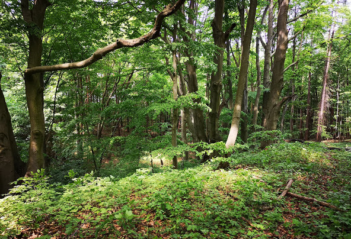

Rezerwat przyrody Bukowa Góra
Rezerwat położony jest w Paśmie Przedborsko-Małogoskim, na zboczach góry Buczyna, zwanej też Bukową Górą (334 m n.p.m.) – najwyższego wzniesienia powiatu włoszczowskiego. Leży w miejscowości Rączki. Wchodzi w skład Przedborskiego Parku Krajobrazowego. W pobliżu znajduje się rezerwat przyrody Murawy Dobromierskie.